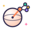

Quantum Machine Learning
Four weeks that join both tutorials: encoding data into qubits, quantum kernels, trainable quantum classifiers, and how to do honest QML research.
About 15 minutes a day, five days a week, for 4 weeks, with a short flashback at the end of each week.
Why quantum machine learning?
Week 1 · Day 1

Ten focused minutes beat an hour of half-attention.
Data meets qubits
How classical data gets into a quantum computer, and how to measure how similar two quantum states are.
Quantum kernels
Let a quantum computer measure similarity, then let a classical support vector machine do the rest.
Variational quantum classifiers
Trainable circuits as models: readout, losses, hybrid training with PyTorch, and data re-uploading.
QML for research
Noise, trainability, honest baselines, quantum data, and how to read and run a QML study of your own.
Then: research
After these four weeks you can read a QML paper and recognize every piece: data, encodings, kernels, losses, optimizers, circuits and measurements. That is where research starts.